Janet 快车箱
AI Daily Briefing
2026-06-19
VOL 262
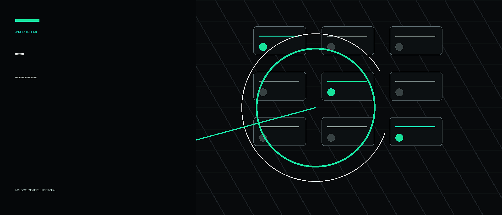
对中国创作者和企业，最实际的信号是别把工作流押在单一入口。Adobe、Google Docs、Meta、ChatGPT 都在把 AI 做成默认层，苹果又提醒内存和存储成本会传导到终端价格；会用工具的人会更快，但不会算账的人也会更快烧钱。
接下来 2-4 周盯三件事：Anthropic 模型禁令会不会逼出更明确的美国 AI 出口规则，OpenAI 和 Google 的人才战是否继续扩散到模型负责人级别，创作软件与办公套件会不会继续把“关掉 AI”做成隐藏技能。
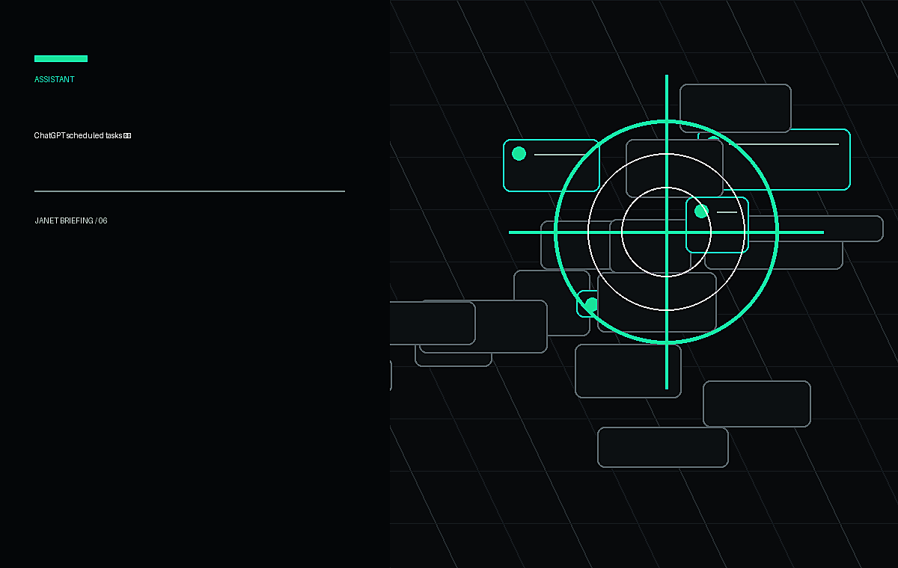
OpenAI Help Center 6 月 17 日更新 ChatGPT release notes，Scheduled tasks 新增独立 Scheduled 页面，用户可在侧边栏查看任务、下一次运行时间，并暂停、恢复、编辑或删除。OpenAI 还称任务运行更快、更可靠，通知也更有用。
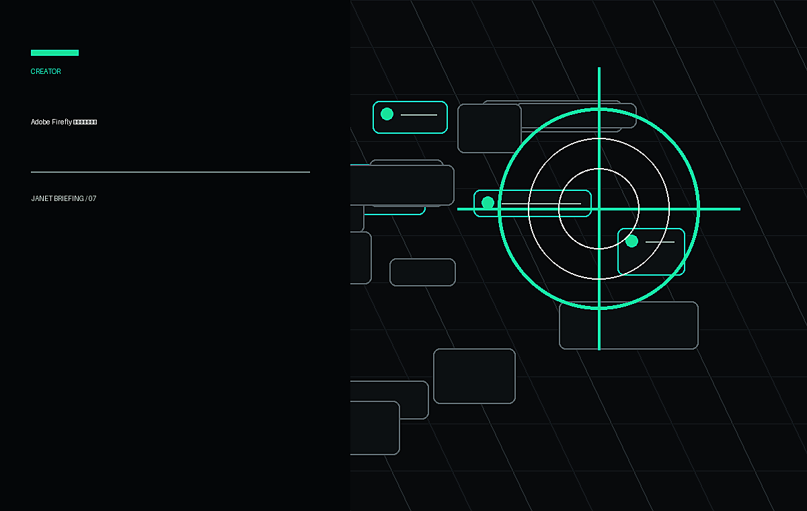
TechCrunch 6 月 18 日报道，Adobe 正把 Firefly AI assistant 扩展到 Premiere、Illustrator、InDesign 和 Frame.io。新能力包括生成 brand kits、product videos、storyboards，在 Premiere 里整理素材、批量重命名、识别采访问题和加 markers，在 Illustrator 里整理图层和检查字体。
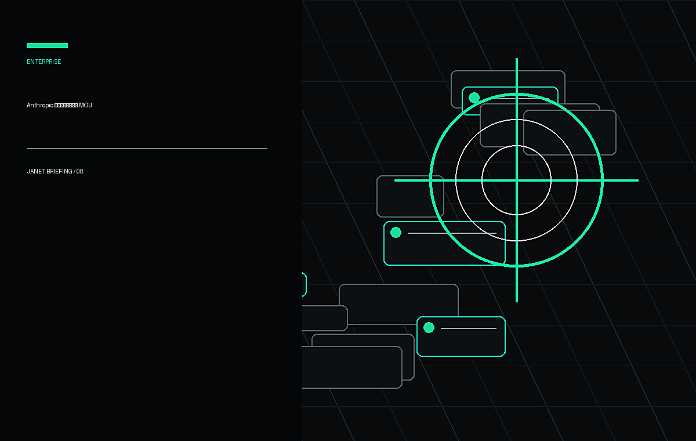
Anthropic 6 月 18 日更新首尔办公室与韩国合作公告，补充与韩国政府 MOU 细节。公告称 Samsung SDS 正向 Samsung Electronics 员工部署 Claude，团队使用 Claude Cowork 和 Claude Code 做知识工作、agentic workflows 和软件开发；NAVER、Nexon、LG CNS、Hanwha Solutions 等也在使用 Claude。
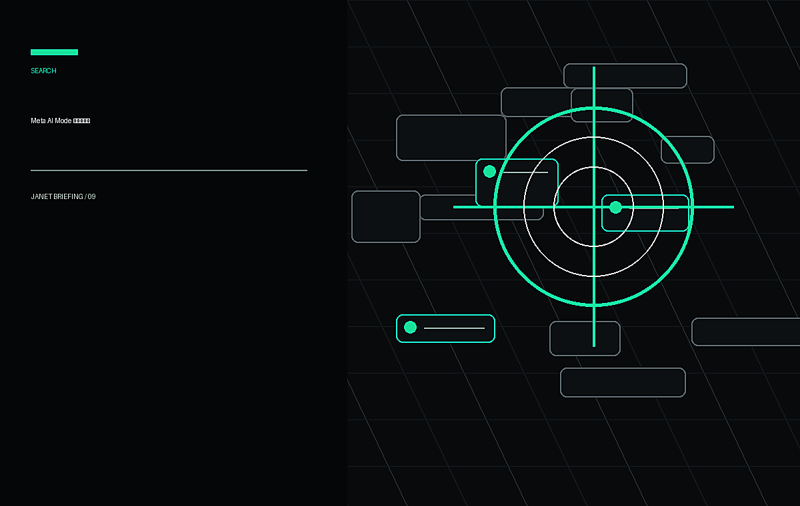
Meta 6 月 15 日发布 Facebook AI Mode，Techmeme 6 月 18 日继续追踪该功能。AI Mode 使用 Meta AI，从 Facebook Groups、Reels 等公开内容里生成答案；Meta 同时推出 AI 创作工具、camera roll sharing suggestions、AI photo presets 等功能，试图把搜索和创作都留在 Facebook 内部。
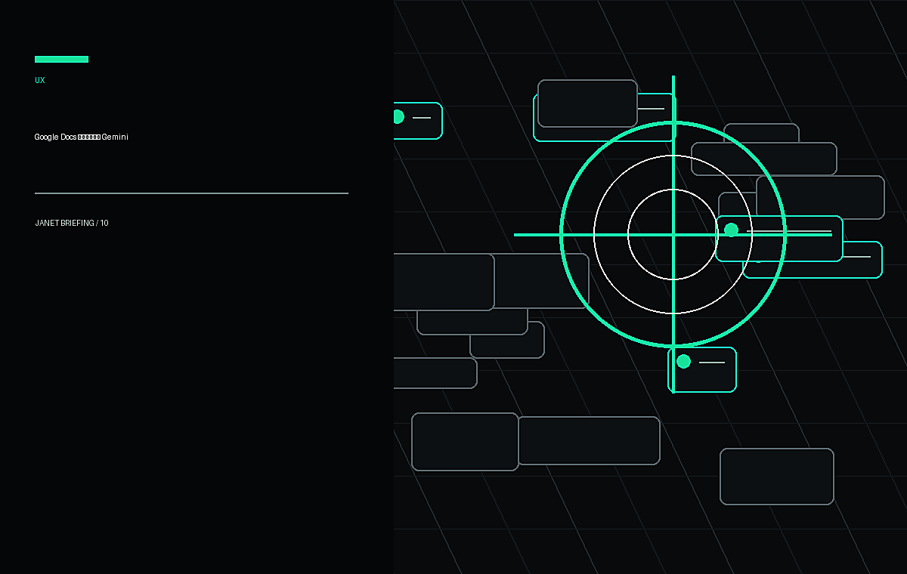
TechCrunch 6 月 17 日发布教程，解释如何关闭 Google Docs 里“write with Gemini”的底部 AI 输入框：点击顶部 Gemini 菜单，再进入 bottom bar preferences 关闭。文章还提醒，若要更彻底关闭 Workspace smart features，需要到 Gmail 设置中切换相关选项。
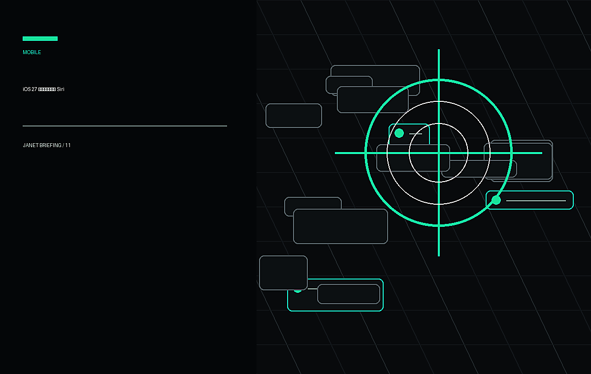
Techmeme 6 月 18 日聚合 Bloomberg 报道称，Siri AI 已足以缓解 Apple 的 AI 危机，iOS 27 首个开发者 beta 内部包含接入 OpenAI 以外第三方 AI 模型的能力。该信号显示 Apple 仍在尝试把 Siri 从封闭助手改造成可替换模型的入口。
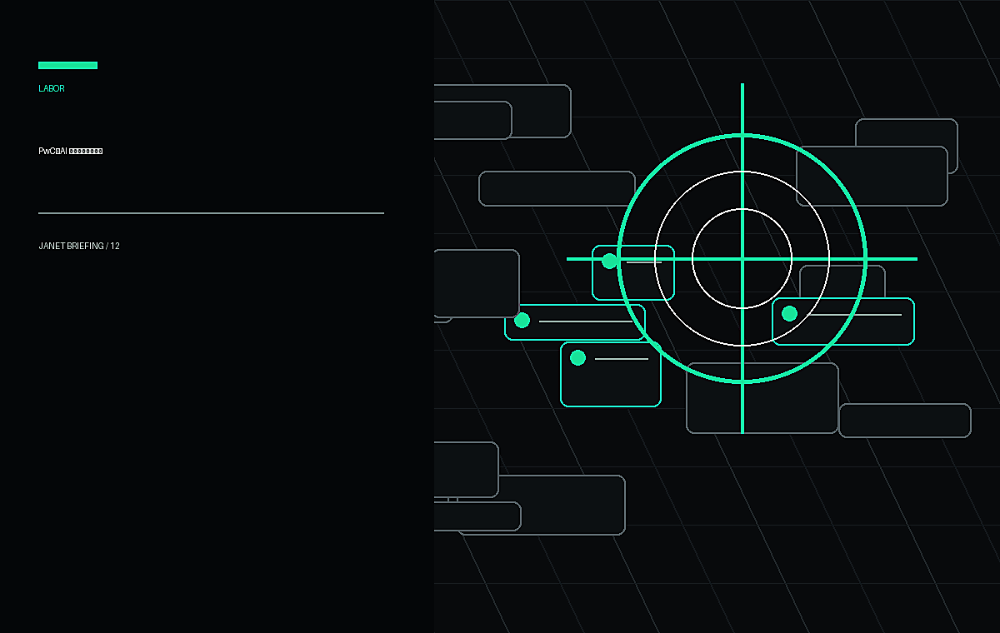
Techmeme 6 月 18 日聚合 PwC 2026 Global AI Jobs Barometer：PwC 基于 27 个国家超过 10 亿条招聘信息等数据，称 AI 正把劳动力市场拉向两条路。使用 AI 强化人类技能的公司更受益，只把 AI 当裁员工具的公司落后；AI job roles 在 2025 年增长速度约为整体市场 8 倍，相关技能工资更高。
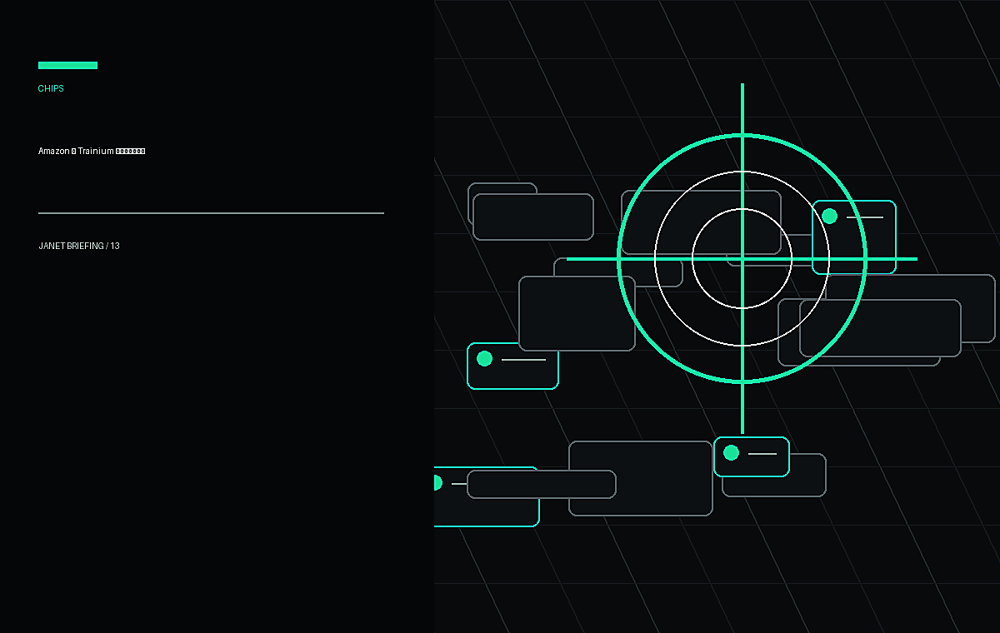
Techmeme 6 月 18 日聚合 Bloomberg 报道，Amazon AI chief Peter DeSantis 称公司正在谈判，将自研 Trainium AI chips 销售给第三方数据中心使用。此前 Trainium 主要服务 AWS 和 Bedrock 相关负载，若外卖成真，Amazon 将从云服务商更进一步进入 AI 芯片供应链。
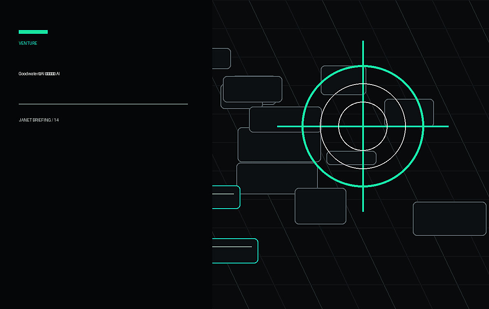
TechCrunch 6 月 17 日采访 Goodwater Capital co-founder Chi-Hua Chien。他认为模型层商品化已经开始，最先进模型与手机端可运行模型之间的差距可能在一年内缩到 3 个月；AI 时代最大赢家未必是直接卖 AI 的公司，而是把 AI 嵌进消费者真实行为和服务里的公司。
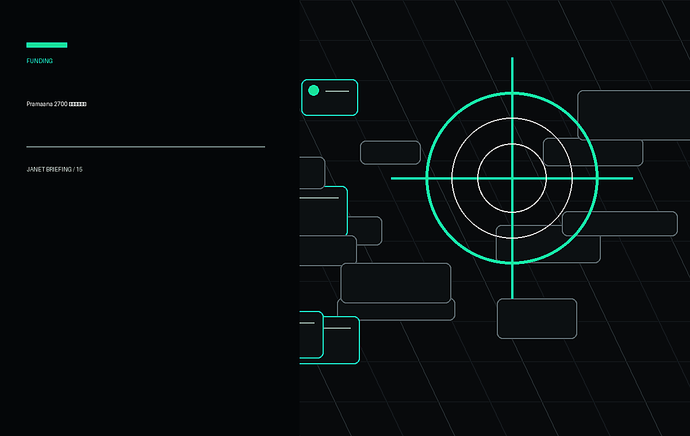
The Next Web 6 月 18 日报道，Pramaana Labs 完成 2700 万美元 seed round，由 Khosla Ventures 领投，Accel、BoldCap、Nexus Venture Partners、Premji Invest、Unbound 参投。公司想把 formal verification 用到法律、药物发现、税务等高风险领域，用类似 LEAN 的证明方法拦截 AI 错误。
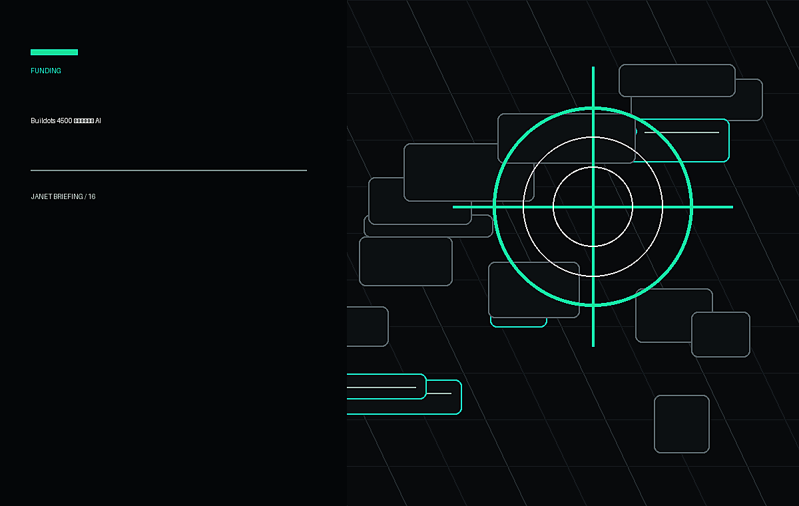
Buildots 6 月 18 日宣布完成 4500 万美元 Series D，总融资额达到 1.66 亿美元。本轮由 Qumra Capital 领投，OG Venture Partners、TLV Partners、Poalim Equity、Future Energy Ventures 和 Viola Growth 参投。公司用 AI、自动化和预测分析管理大型建筑项目，特别强调数据中心和半导体工厂等复杂工程需求。
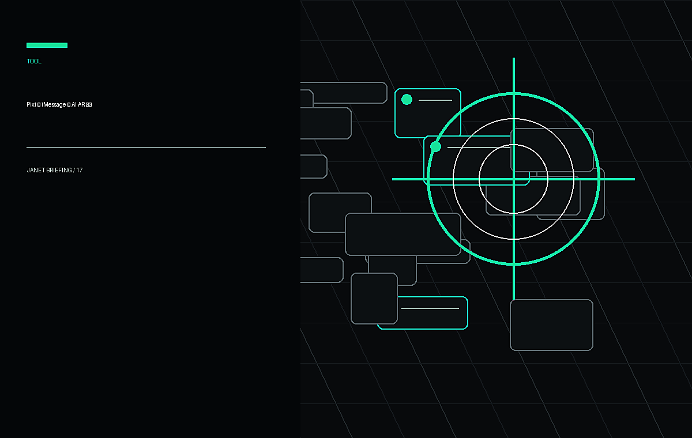
TechCrunch 6 月 18 日报道，Pixi 发布 iOS app，允许用户通过 iMessage 发送 AI-powered AR characters。接收者不必安装 app，角色会通过 iPhone 摄像头出现在真实环境中，可响应周围物体、人和语音；Pixi 称视觉和音频处理留在设备端，未来计划开放用户生成角色。